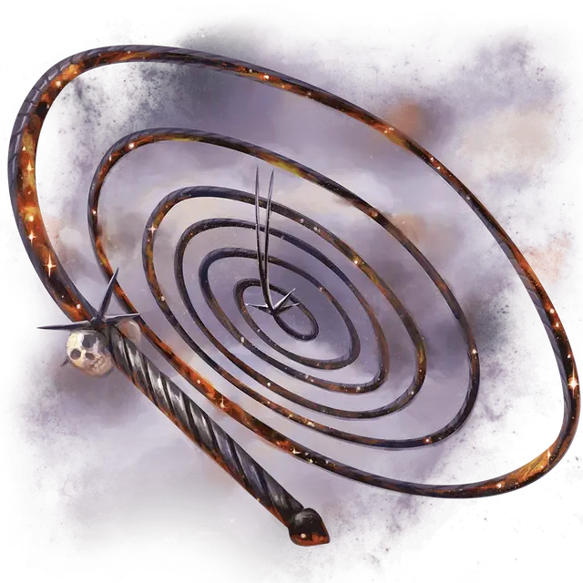

Мастикс, кнут Эреба
Mastix, Whip of Erebos
Оружие (кнут), артефакт (требуется настройка)

Эреб владеет Мастиксом — кнутом, способным вытягиваться, словно невероятно длинная тень. В руках бога мёртвых кнут ловит непокорных мертвецов и тащит их в своё царство. Когда Эреб дарует свое оружие смертному последователю, он обычно делает это для того, чтобы вернуть себе могущественную душу или унизить Гелиода.
Кнут смерти. Кнут Эреба бурлит всепоглощающей энергией Подземного царства. Этот магический кнут даёт бонус +3 к броскам атаки и урона, совершённым этим магическим оружием. Когда вы попадаете атакой с помощью этого кнута, цель дополнительно получает 2к8 урона некротической энергией, и вы восстанавливаете количество хитов, равное половине нанесённого урона некротической энергией.
Кроме того, когда вы совершаете атаку кнутом в свой ход, вы можете увеличить дальность атаки до 300 футов. Это свойство оружия не может быть использовано снова до следующего заката.
Благословение смерти. Если вы служите Эребу, вы получаете все следующие преимущества, для которых у вас есть необходимое значение благоволения:
Благоволение 1+. Кнут получает 1 случайно определяемое малое отрицательное свойство-бремя, которое Эреб накладывает, чтобы проверять своих последователей.
Благоволение 25+. Кнут получает 1 случайно определяемое основное полезное свойство.
Благоволение 50+. Кнут получает 1 дополнительное случайно определяемое основное полезное свойство.
Если вы не служите Эребу, кнут получает 2 случайно определяемых основных отрицательных свойства.
Притязания Эреба. Держа кнут, вы с его помощью можете действием наложить либо круг смерти [circle of death], либо подчинение чудовища [dominate monster] (нацеленным только на нежить). Сл спасброска для этих заклинаний 18. Как только вы используете кнут, чтобы наложить заклинание, оно не может быть наложено с помощью кнута снова до следующего заката.
Уничтожение кнута. Чтобы уничтожить кнут, необходимо отнести его на вершину горы Гиаст в Нюкте, расплести с помощью вернувшегося и оставить прогреваться под непрерывным дневным светом в течение одного месяца.